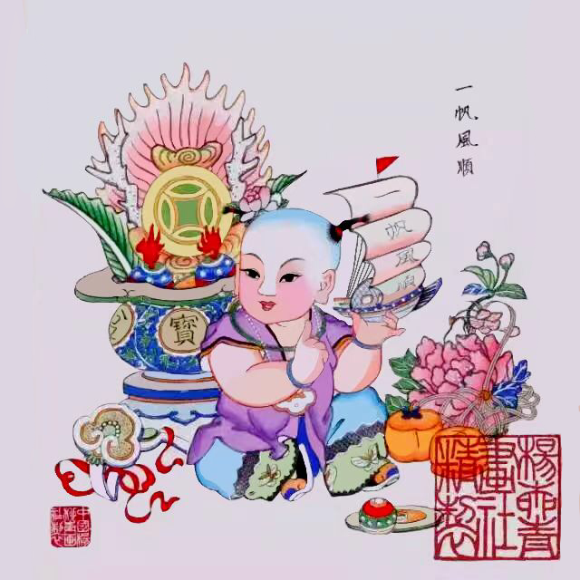
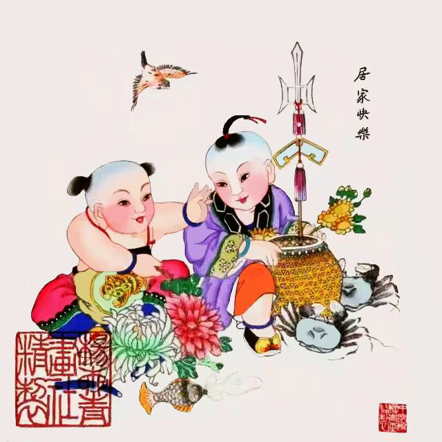
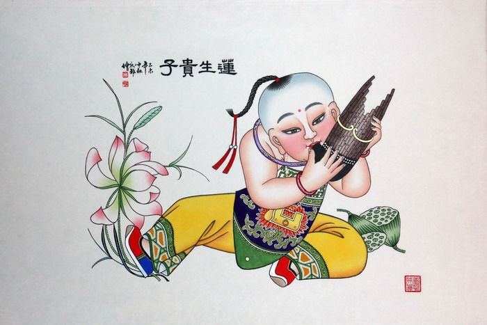
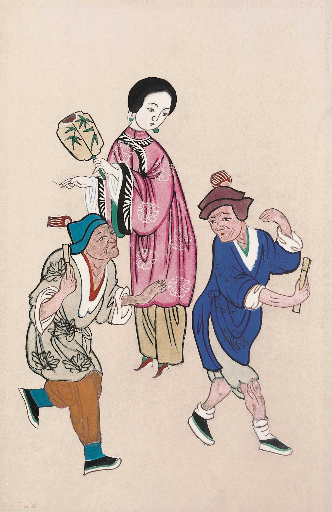
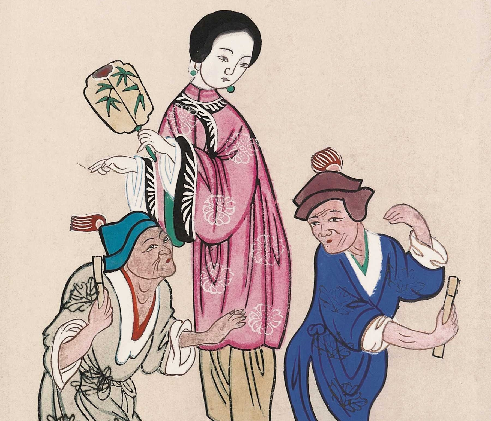

辟邪纳祥
外出旅行，出发时图吉利，大多祝祷“一路顺风”或“一帆风顺”。画面儿童手托一风船模型，以示吉语。其他如聚宝盆、玉如意、牡丹花，皆为陪衬，象征祥瑞。


民风民俗
画中二童坐地互语，一童前有鱼篓插天方画戟，上挂玉磬;一童坐前有菊花，并有鱼符一枚;空中飞来一只麻雀。以“菊”寓“居”，因螃蟹有甲壳以寓“家”，以麻雀飞来快要落地寓“快乐”。


生产生活
旧时民俗喜多子，故有“连生贵子”吉语。贵子光头梳一顶辫。坐地，双手报笙，吹奏乐曲，身略斜，似随乐曲旋律，身不由己而晃动。脚边有荷花怒绽。其旁尚有莲蓬两个，以荷莲、乐器的笙寓“连生”，此幅为娃娃画最佳最妙之一幅。


讽刺幽默
白狗精见画匠刘成金的妻子梁氏貌美便企图霸占。白狗变成刘成金去见梁氏，却与归来的刘相遇。因真假难辨，告到县衙。包拯审清案子，斩了白狗。画面上的妇人即梁氏，二男子为真假刘成金。